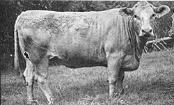

Folks from all over are asking about . . .
About a year and a half ago this magazine published an article, by Elsie M. Banks, about an unusual breed of livestock: the American Beefalo . . . a 3/8 bison and 5/8 domestic cattle hybrid (see page 82 in MOTHER NO. 57). Well, Ms. Banks's informative story created such a stir that the folks at the American Beefalo Association have been swamped with letters . . . from "practically every state in the union, every province in Canada, various parts of Mexico, and as far away as Spain and England".
So, in an attempt to get the word out to as many "alternative cow" enthusiasts as possible, George E. O'Connor - Executive Director of the ABA - has provided the following answers to the most frequently asked questions about the magnificent hybrid cattle.
Question: What are the main advantages of raising Beefalo instead of "standard" livestock?
O'Connor: A Beefalo's 3/8-bison, 5/8-bovine parentage provides the hybrid with the most favorable genetic traits of both the American bison and domestic cattle. According to ranchers who raise them, the prolific crossbreeds are hardier, are more economical (and less care-intensive) to nurture, and produce meat that's superior to that of the common cow.
To be more specific, bison-crossed livestock inherit the foraging ability of their free-roaming ancestors, and thus can feed entirely on available hay and grasses . . . efficiently converting pasturage to weight gain without requiring extensive grain supplements. In fact, tests by the ABA have shown that hybrids raised solely on roughage rations actually outgain both Beefalo and domestic cattle that have been fed on grain. This distinctive Beefalo trait can add up to a saving of about 10 cents for every pound the beasts put on!
In addition, the rugged critters are able to withstand extreme cold (thanks to their thick "buffalo robes") ... yet - like their native American forebears - Beefalo perspire through the skin and thus maintain a constant "cool", even during the sultry summer months.
The hybrids are also valued for their high degree of fertility (they mature younger and breed earlier than do standard cattle) and their lack of reproductive problems. Beefalo calves are born easily - and usually without any assistance - requiring no special "infant" care from the homesteader. The rugged young "percentage-bison" are smaller (tipping the scales at 40 to 60 pounds at birth) than newborn domestics, a characteristic that lessens the birthing hazard to the Beefalo mamas . . . and the foraging "babies" rapidly gain weight, generally reaching 800 to 900 pounds in 10 to 12 months! Furthermore, the animals live longer than do most standard cattle . . . and Beefalo bossies have a longer productive life.
Finally, Beefalo meat is tender, more flavorful (and a little sweeter), and - believe it or not - more nutritious than the table fare from a common steer. The "Beefalo brand" has 4 to 6% more protein and only a fraction of the cholesterol of supermarket steak . . . and less fat means less waste, less shrinkage, and less time in the oven (which - in turn - produces a household energy saving!). Any way you look at it, it's a better "beef" buy! [EDITOR'S NOTE: For a detailed, nutrient-by-nutrient comparison of Beefalo vs. beef, see MOTHER NO. 57, page 83 . . . or write the American Beefalo Association at the address given below.]
Question: We're interested in building up a Beefalo herd. How do we get started, and does the ABA have a list of available breeders . . . or of farmers who sell stock?
O'Connor: Ranchers already owning domestic cattle can obtain semen from fullblood Beefalo bulls and artificially breed their standard stock to produce a halfblood (or 19% bison) Beefalo. Then, by breeding the hybrid females back to fullblood bulls for two or more subsequent generations, pure blood Beefalo (approximately 38% bison) can be obtained. And, for those farmers who are not set up to artificially inseminate their cows, the ABA keeps a record of registered "percentage" bulls that are available for breeding to domestic cows.
In addition, folks who are not yet in the cattle business, or those Beefalo enthusiasts who would like to get a quicker jump on the upbreeding process, may want to buy percentage Beefalo stock. The ABA does not give out the names of breeder members who have excess cattle to sell, but if you write a letter of inquiry to the organization, we will have breeder-members in your area contact you.
Question: What is the average purchasing price of Beef alo calves?
O'Connor: The hybrid stock are generally sold at weaning age (when they're about 205 days old) . . . at which time the cost for a half-blood Beefalo heifer is around $1.00 per pound, or $500 to $600 per head. (Cattle closer to purebred are usually a little more expensive.)
The purchasing price for older animals is determined each year by the Kentucky National Beefalo Sale. Recent market figures ranged from $1,150 to $4,000 a head ... depending, of course, on the age of the beast and the percentage of Beefalo in its blood.
Question: Does the ABA have a purebred association in which Beefalo can be registered?
O'Connor: Yes, the American Beefalo Association is an active, growing organization that registered over 10,000 "percentage" Beefalo cattle in its first five years of recording. Not only does the ABA register purebred Beefalo stock, but it also has an Ancestry Record that lists the breeding of other part-bison livestock.
Question: Are Beefalo suitable for commercial milking?
O'Connor: The hybrid bossies are usually extremely good milkers (when crossed with dairy stock), producing yields with a high butterfat content (their production is partially dependent upon the milking record of the domestic ancestor). One ABA member found that his crossbreed cow gave 40 pounds of milk per day, with an admirable butterfat content of 6.5% . . . while his purebred Jerseys averaged 5.5 to 6.0% butterfat. And the taste test? The bison ancestry Imparts a slightly sweeter-than-usual flavor to the rich, creamy drink.
Question: Where can Beefalo meat be purchased?
O'Connor: Currently, the demand for the "buffalo beef" far exceeds the supply. Those people who are fortunate enough to live near a breeder can sign up - through the ABA - for the Breeder Home Freezer Sales program.
The outlook for future Beefalo supplies, though, seems overwhelmingly optimistic. More and more folks are becoming aware of the distinct advantages of the hardy and free-foraging gentle giants. The small amount of labor and cost required to raise the critters make them perfect stock for ranches of any size . . . while the superior quality of the beef and milk - as well as the high sale price that surplus cattle can demand - makes the hybrid ideal for a land-limited homestead. In short, i!t appears that the American Beefalo is here to stay .. . and will soon be available to farmer and supermarket consumer alike.
EDITOR'S NOTE: An in-depth information packet on Beefalo can be obtained from the American Beefalo Association, Inc., Dept. TMEN, 200 Semonin Building, 4812 U.S. Highway 42, Louisville, Kentucky 40222 ... but please include $2.00 with your request, to cover printing and shipping costs. In addition, a year's subscription to the association's bi-monthly magazine, Beefalo Nickel , is available for $10 ($14 outside the U.S.).
MOTHER NO. 57, which was mentioned In this article, may be ordered from THE Mother Earth News(restricted). See page 148 for details.
|
 |
|
|